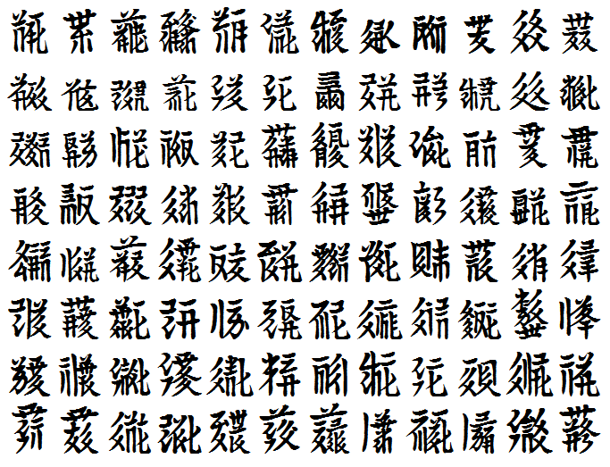
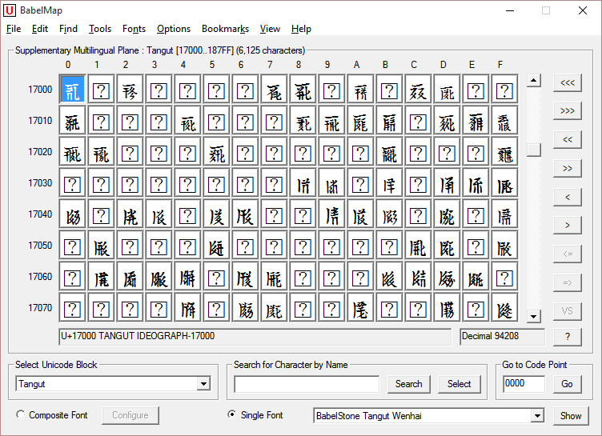
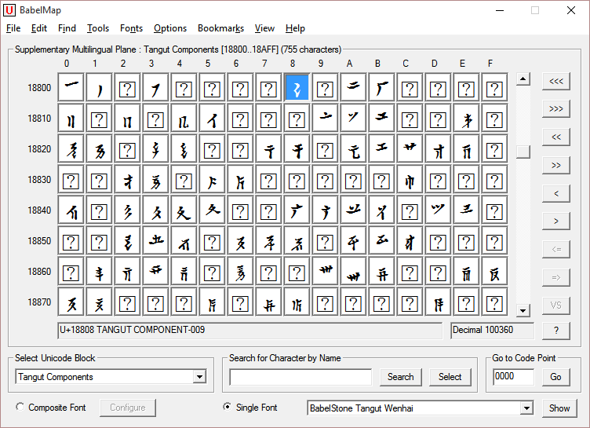

BabelStone Tangut Wenhai is a Unicode Tangut font covering 3,061 of the 6,125 Tangut ideographs encoded in Unicode version 9.0 (released in June 2016). The glyphs are derived from the 3,064 head characters in the calligraphic facsimile reproduction of the 𘝞𗗚 Sea of Writing [Wénhǎi 文海] text in Wénhǎi Yánjiū 文海研究 [Study of the Sea of Writing] (Beijing, 1983) by Shi Bojin 史金波 et al. This font also includes 442 of the 755 encoded Tangut components, but these are poorer quality compared with the Tangut ideographs, and may be replaced with glyphs derived from the Tangut ideographs in the future. NB This font does not cover many common Tangut characters, and so is not suitable for use in typesetting Tangut text in academic works.
See this page for a listing of all head characters in the Tangut Sea of Writing (Wén Hǎi 文海) text, encoded in Unicode, and displayed using the BabelStone Tangut Wenhai font (automatically uses a web font if you do not have the font installed on your system).
See this page for Tangut scan fonts mapped to the Private Use Area (PUA).
See this page for a Unicode Tangut font that covers all Unicode Tangut characters.



BabelStone Tangut Wenhai is licensed under the SIL Open Font License 1.1, which means you are free to use it for personal or commercial purposes, and to redistribute it by itself or as part of a free or commercial software package, just as long as you do not sell the font on its own. The license also allows you to modify the font in any way you like, as long as the modified font does not use "BabelStone" in its name. Please read the license for details.